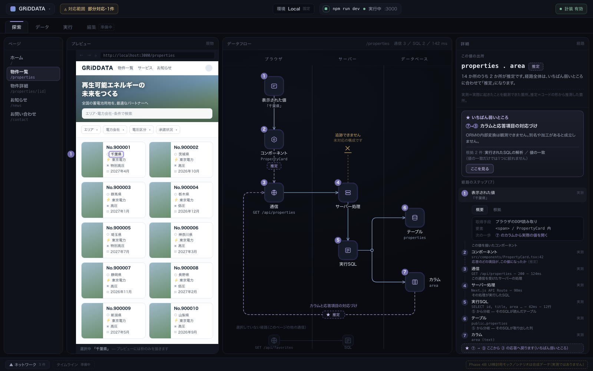
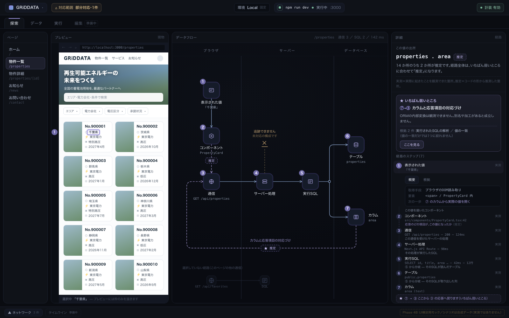
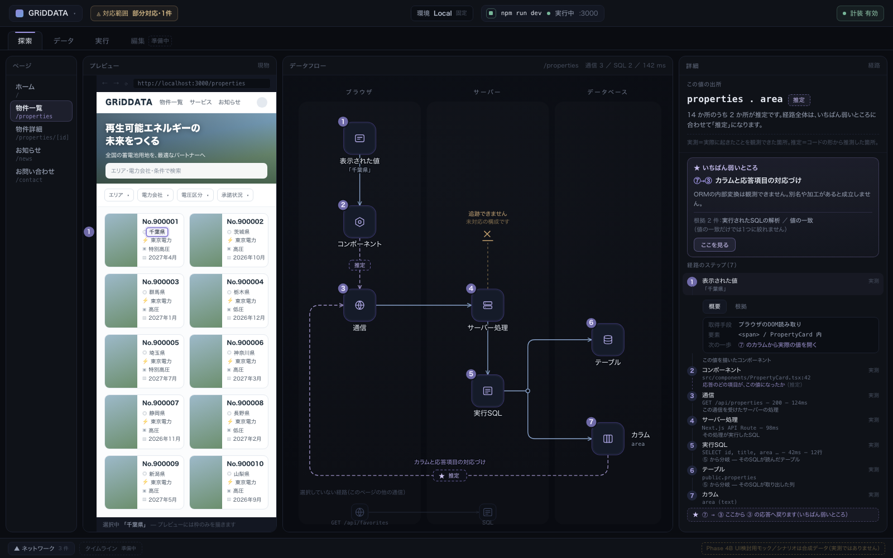
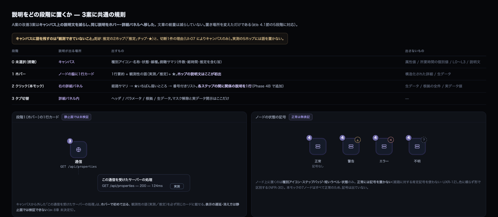
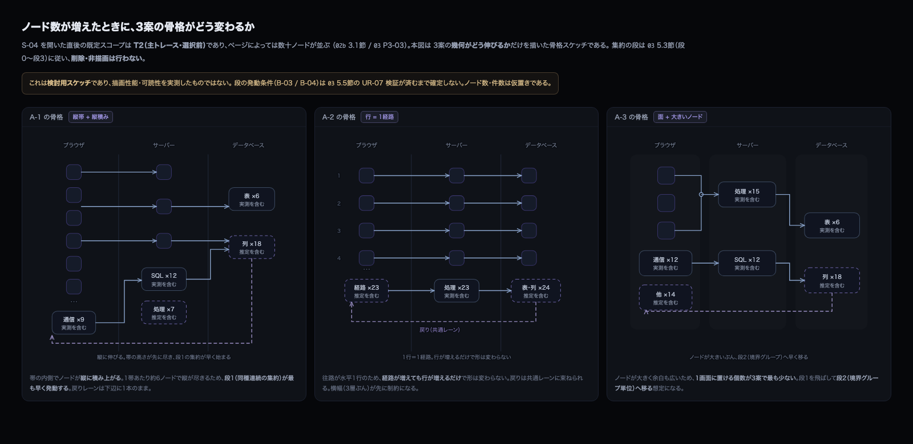

Phase 4A で採用が決まった A案 を出発点に、レイアウトだけを3通りに振った比較です。 A案の基本コンセプト（データフローを中心に置く／ブラウザ・サーバー・データベースの関係を空間で示す／ 線画ノード／ダークテーマと控えめな配色／実測と推定の区別／段階的開示）は変更していません。 3案とも 同一のデータ・同一の観測性・同一の選択状態（段階2）・1600×1000 で描いています。
| 経路 | 7ノード：① 表示された値 → ② PropertyCard → ③ GET /api/properties → ④ サーバー処理 → ⑤ 実行SQL →
⑤ から分岐して ⑥ properties（reads）と ⑦ area（projects）。7ホップ。 推定は ②→③ と ⑦→③ の2本。最弱環は ⑦→③（下流優先）。 ⑥→⑦ の線はモデルに存在しないため描かない（OBS-05） |
| 折り返しを消さない | ⑦→③ の逆行は3案とも線を消さずに最後まで描く（推定のため破線）。 番号を振り直して見かけ上一直線にしない（03a UX-02） |
| 異常状態 | 1件：④ からの外部呼び出しが 未対応の構成のため追跡できない（切断マーカー）。N0 は「部分対応・1件」 |
| 経路外 | 2ノード（GET /api/favorites・SQL）を減光して保持。削除しない（UI-33） |
| 件数 | 14 か所（ノード7 + ホップ7）のうち実測 12 ／ 推定 2。経路から算出する導出値であり定数ではない |
| 観測性の符号 | 実線＝実測／破線＋「推定」語＝推定／★＝最弱環／✕バー＝切断。色は一次符号にしない（NFR-30） |
| 詳細パネルの順序 | 経路サマリ → ★いちばん弱いところ → 番号付きリスト。移動しない（03 10.3節） |
| 経路の折り返し | ⑦→③ をキャンバス外周をぐるりと回る線から、下辺の専用レーン＋ブラウザ帯内側の立ち上がりへ変更。 右辺と上辺を通らなくなり、減光ノード群との近接も解消した |
| 往路の逆行をなくす | 原案の ③→④ は「右へ出てから上へ戻る」折れ線だった。3案とも③ と ④ を同じ高さに置き、往路から上向きの区間を消した |
| 分岐の明示 | ⑤→⑥（reads）と ⑤→⑦（projects）を、共通の枝 → 分岐点（○）→ 2本として描き直した。独立した2本の曲線をやめた |
| 合流の明示 | ③ は 上辺で ② を、左辺で ⑦ を受ける。入り口の辺を分けて、どちらから来たかを位置で示す |
| 切断の向き | ④ からの外部呼び出しをサーバー帯の内側を上へ抜ける形に変更（原案はデータベース帯へ向かっていた） |
| 常時表示の文を削る | キャンバス上の実測5ホップの説明文を全廃。語を残すのは「観測できていないこと」＝推定2ホップと切断1件のみ |
| 説明の移し先 | 外した説明は詳細パネルのステップ間に1行ずつ置いた（本モックで確認可）。ホバー（段階1）にも配分する |
| 線の描き方 | 折れ線を直交＋角丸に統一し、折れの位置を読み取りやすくした |
| 指標（いずれも図から機械的に数えた値。性能・可読性の実測ではない） | 原案 A | A-1 | A-2 | A-3 |
|---|---|---|---|---|
| ⑦→③ の線の長さ（キャンバス座標 px） | 1044 | 913 | 868 | 940 |
| ⑦→③ が使うキャンバスの辺 | 右・下・左 | 下のみ | 下のみ | 下のみ |
| 往路（①→⑦）に含まれる逆行区間 | 1 本（172px 上向き） | 0 | 0 | 0 |
| 線どうしの交差 | 0 | 0 | 0 | 0 |
| キャンバス上の文字ブロック数（ステップバッジを除く） | 36 | 24 | 24 | 21 |
| ノードの一辺 | 52px | 52px | 52px | 58px |
| つながるノードの箱どうしの最小間隔（UI-05 は 90px 以上） | 120px | 92px | 92px | 92px |
| キャンバス幅 ／ 詳細パネル幅 | 622 / 360 | 620 / 360 | 680 / 360 | 700 / 374 |
| ノード上の識別子 | 5 個 | 5 個 | 5 個 | 2 個（① と ⑦ のみ） |
原案の骨格（ブラウザ／サーバー／データベースの縦3帯、ブラウザ帯を縦に下る ①②③）をそのまま残します。 変えたのは4点だけ — ③ と ④ を同じ高さに揃えて往路の上向き区間をなくし、⑦→③ を下辺の専用レーンに移し、 ⑤ の分岐を明示し、常時表示の説明文を外しました。原案からの差分が最も小さく、合意の取りやすい案です。 代わりに、戻りレーンが囲む左下の空白が3案で最も広く残ります。

③→④→⑤ を1本の水平線にそろえ、⑤ で上下に分岐、⑦ から下辺を通って ③ へ戻します。 往路は左から右へ一直線、復路は右から左へ一直線という、向きの揃った2本のレーンになります。 帯の幅は中身に合わせて可変にし（ブラウザ 218 ／ サーバー 292 ／ データベース 170）、④ と ⑤ を横に並べました。 ⑦→③ の線が3案で最も短く（868px）、「行って、戻る」という経路の形が最も素直に読めます。 ただし帯の幅配分が3案で最も不均等になります。

帯の境界線をやめて淡い面で層を示し、罫線を2本減らしました。そのぶんノードを 58px に大きくし、 キャンバスを最も広く（700px）取っています。さらにノード上の識別子を起点 ① と終点 ⑦ だけに限り、 中間の `PropertyCard` / `GET /api/properties` / `properties` を詳細パネル側へ移しました。 キャンバス上の文字ブロックは3案で最少（21）です。 「ノードに何を書くか」を最も強く絞った案であり、中間の識別子をキャンバスから外してよいかが判断の分かれ目になります。

キャンバスから外した説明文は消していません。ホバー（段階1）と詳細パネル（段階2・3）へ移しただけです。 ノード上に置く情報の限定と、状態の記号もここで定めています。

S-04 を開いた直後の既定スコープは T2（主トレース・選択前）であり、ページによっては数十ノードが並びます。 3案の幾何がどの方向に伸びるかだけを描いた骨格です。 描画性能も可読性も実測していません。集約の段の発動条件は UR-07 の検証待ちです。

本ページは Phase 4B（採用案のブラッシュアップ）の成果物です。 最終案の選定は行っていません。デザインシステムの確定、他画面への展開、アプリケーション本体の実装も行っていません。 B案・C案の構成を取り込んではいません（C案の「分かりやすさ」は、文章を常時表示する形ではなく、 ホバーと詳細パネルへの配分として取り入れています）。